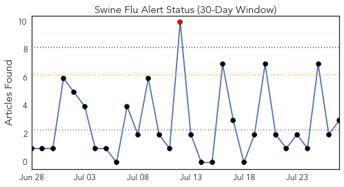
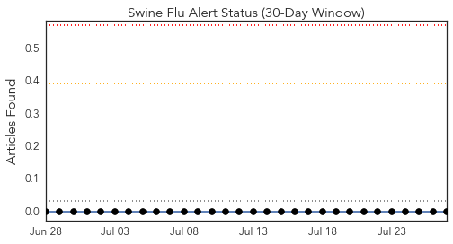
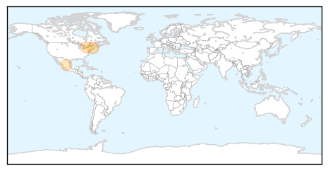
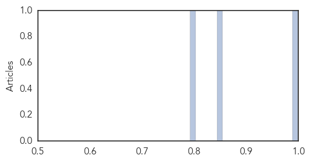
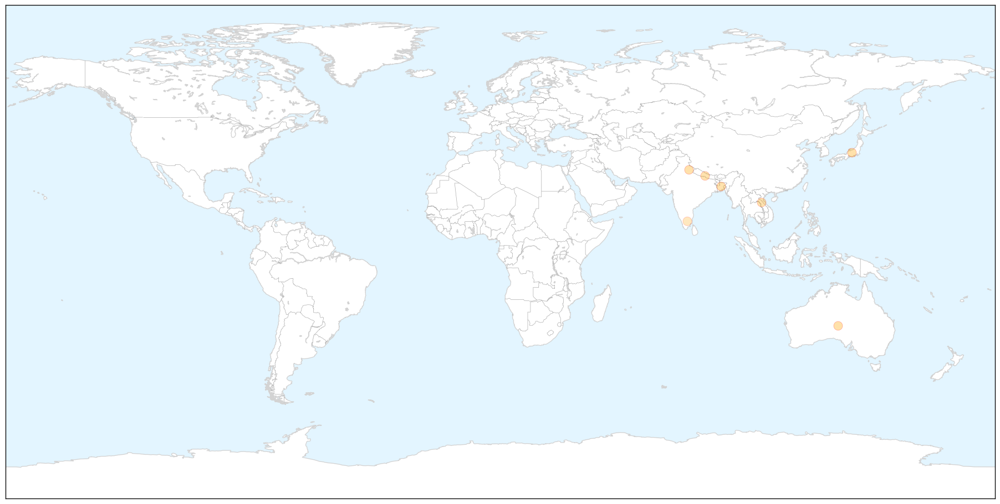

Swine Flu
30-Day Web Trend
1 alerts, 0 warnings

30-Day Twitter Trend
0 alerts, 0 warnings

Article Locations
Article Confidences
Top Articles:
Top Tweets:
-
No tweets found for Jul 27, 2015
Dengue Fever
30-Day Web Trend
0 alerts, 0 warnings

30-Day Twitter Trend
1 alerts, 0 warnings

Article Locations

X

Article Confidences

Top Articles:
- 0.996
- Dengue fever cases spike in SA, Government urges travellers to protect themselves
- 0.994
- Suspects of Japanese Encephalitis surface, health department on toes
- 0.993
- Dengue cases on the rise, city hospitals placed on alert
- 0.979
- Samoa fears dengue spreading beyond Apia
- 0.957
- Dengue back in the capital, govt mulls awareness campaigns - Click Ittefaq
- 0.957
- Monsoon invites common health problems
- 0.946
- Diseases on wane in HCM City
- 0.764
- 10 dengue deaths over Hari Raya weekend
- 0.759
- TTD offers support to tackling dengue
- 0.749
- Door-to-door survey launched
Top Tweets:
-
No tweets found for Jul 27, 2015